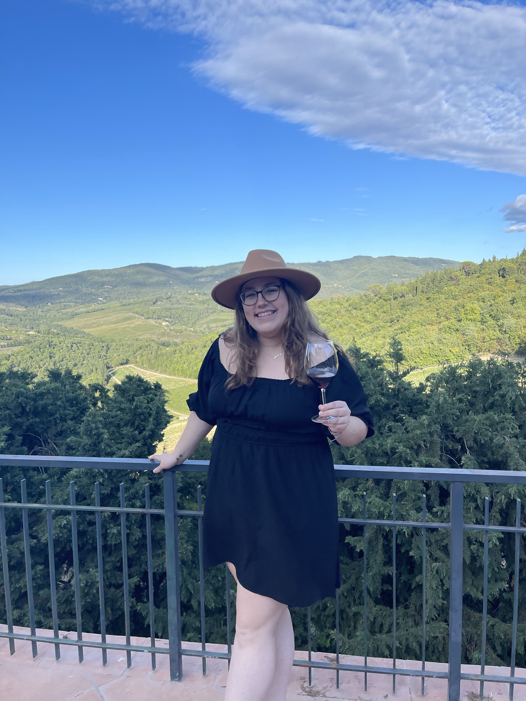

Abby Saunders
Media Art and Design Major

SUMMARY
Highly creative and motivated Media Arts and Design student with a passion for visual storytelling and digital innovation. Proficient in utilizing a wide range of multimedia tools and software to produce compelling and engaging content. Adept at combining artistic vision with technical expertise to create captivating visual experiences. Eager to contribute innovative ideas and collaborate with teams to bring projects to life. Seeking opportunities to apply and expand skills in the dynamic and ever-evolving world of media arts and design.
EDUCATION
James Madison University
Bachelor's Degree in Media Arts and Design
2020 - Estimated 2024
Southampton High School
High School Diploma
2016 - 2020
PROFESSIONAL EXPERIENCE
- Taking drink orders and recommending beverages based on customer preferences
- Maintaining a well-organized and clean bar area to ensure a visually appealing and sanitary environment
- Handling cash and processing transactions accurately using cash registers or POS systems
- Interacting with customers, engaging in conversation, and providing excepuonal customer service
Logo Designer - Assisting/Intern
Tri-Beta & Italian, JMU | 2023
- Collaborate wit cients or project managers to understand the design requirements and target audience
- Create initial design concepts and sketches based on the clients brief and research findings
- Ensure that the minal logo design is scalable and versatile for various applications (print. digital. merchandise. etc..
- SeeK leeaback irom peers or mentors to continuously improve desion skils and techniques
Photographer
Indpendent | Present
- Capture high-quality images using professional cameras and lenses
- Adiust camera settings to achieve desired effects
- Edit and retouch photos to enhance color, lighting, and overall image quality
- Deliver final edited images to clients within agreed-upon timelines